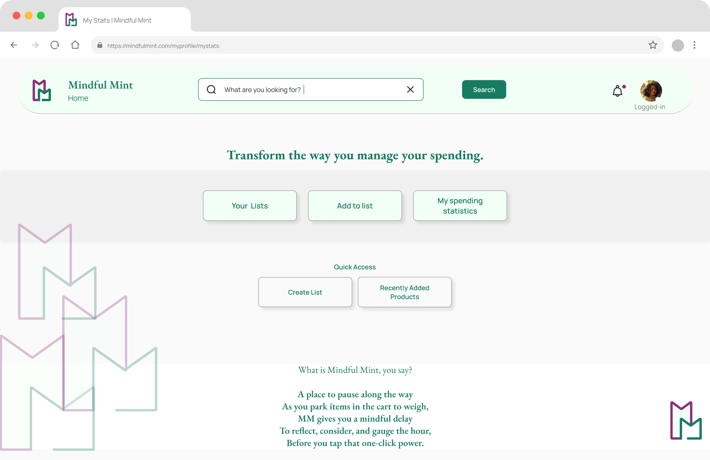

Project Overview
Essence
I made an app (Mindful Mint), so one can make online purchases more intentional & meaningful potentially without giving in to the urge to buy immidiately as one discovers new things online.
This 6-week academic project focused on designing a tool that help customers
pause
and reflect before making online purchases. I worked with a team of three. Each
of us was responsible for designing one platform; mobile, browser extension, or
website while regularly sharing feedback to strengthen the overall experience.
I contributed to the overall customer research and led the ideation and
usability
testing for the website experience, which I also owned. Our solution is
designed to help customers analyse and evaluate their shopping needs, aiming to
support mindful decision-making without inviting Buyer's remorse.
Context & Problem
Essence
Problem Statement: Its location is questionable!!!!
Online shopping is designed for speed, not reflection. This leads customers to make impulsive purchases they later regret, causing overspending and product clutter. Shoppers need support before they happen to buy, without restricting their freedom or joy in shopping.
Details
E-commerce platforms prioritize convenience and instant gratification, making it
easy for customers to buy impulsively. Shoppers often make emotionally driven,
one-click purchases without considering need, affordability, or long-term value,
resulting in regret, wasted money, and clutter. Despite wanting to shop more
mindfully, customers often avoid rigid budgeting tools or solutions that feel
restrictive.
There is a clear gap: customers need subtle support that enables
reflection during purchasing, without compromising their autonomy.
| Project: | School CAPSTONE Project |
| Team: | 3 |
| Timeline: | 10 weeks |
| Shared roles: |
|
| My Role: | I was in-charge for the Website of this project. |
| Process: | UX Research, Competitive Product Analysis, Customer Interviews,
Wireframing, Prototyping, Usability testing, Information Architecture, Product Strategy, Visual Design |
Vision & Goals
Essence
Customer research focused on understanding online shoppers who occasionally make impulsive purchases and seek tools for mindful spending.
Details
Vision:
For Customers:To enable customers to make more thoughtful choices by shaping space within everyday digital buying experiences and help build lasting habits.
For Designers:
We aimed to design intentional pauses in the online shopping flow to help people think before they buy.
This project explores the creation of an interventional tool for online impulse shopping, through a mobile app, website, and browser extension.
Customer Overview:
- Primary customers: Frequent impulse shoppers who need support
- Secondary customers: Occasional impulse shoppers looking to improve habits
- Tertiary customers: Cautious shoppers who wnat to avoid impulse buying
Target customer:
Recruting specs:
Given the early stage of the project, we kept the target audience broad
to explore a range of behaviors. Defining narrow customer segments would
have required deeper research, which was outside our scope at the time.
Goals:
#
At the heart of this project was a deeply iterative process, starting
with broad exploration of potential fetaures helping to achieve the goals. These
early ideas acted as catalysts rather than final decisions, and many were
refined or reshaped entirely after customer feedback and exploratory wireframing
testing. This section outlines how our understanding evolved.
#
The full evaluation table included 9+ features and 20+ concerns/questions. A
sample snapshot is shown here for reference.
Interactive Tool: Use the outer rectangle to zoom and explore the detailed breakdown. The inner rectangle shows your current view position. Scroll to zoom • Drag to move • Use slider for precise control.
Loading features and goals breakdown...
Mindful Mint (MM): Strategic Exploration of Idea Integration
Essence
Key Decison Point#0
We brainstormed
three
different approaches that
integrate
the MM idea into the current digital shopping experince space:
Explore the detailed customer flows and design decisions through this interactive magnifying tool. Click and drag the image to move it around, and use the zoom slider to adjust magnification.
Credits: While the brainstorming for the flows was a collaborative effort, I independently developed the graphic elements, organized the information, and crafted the following flow to help visualize and support the team in making an informed final decision about the approach we took.
Approach Comparison & Trade-off Analysis
| Category | Third Party App | Approach 01 | Approach 02 |
|---|---|---|---|
| Core Message | No specific message |
✓ "Search
with
purpose" ✓ Focused on intentional shopping ✓ Clear mindful shopping approach |
"Shop mindfully within limits" May send mixed signals |
| Shopping Experience |
✓ Full
shopping
experience ✓ Direct purchase capability ✓ Natural browsing flow |
✓
Intentional search
only ✓ No random browsing ✓ Purpose-driven shopping |
✗ Enables
browsing
behavior ✗ May trigger impulse shopping ✗ Complex multi-app interface |
| Data Collection | ✗ Limited access to customer data |
✓ Clean
search intent
data ✓ Focused behavior tracking ✓ Privacy-respecting approach |
✗ Complex
cross-platform data ✗ Privacy concerns with integration ✗ Data synchronization issues |
| Customer Engagement | ✗ No mindful shopping features |
✓
Single-purpose
engagement ✓ Clear value proposition ✓ Low cognitive load |
✗
Multi-app
complexity ✗ Feature overload ✗ High switching costs |
| Impulse Prevention | ✗ No prevention mechanisms |
✓ Built-in
browsing
barriers ✓ Forced intentional search ✓ No impulse shopping triggers |
✗ Enables
browsing
behavior ✗ May trigger impulse buying ✗ Complex prevention system |
| Technical Approach | ✗ No MM integration |
✓
Standalone app
development ✓ Lower development complexity ✓ Faster MVP delivery |
✗ Complex
third-party
integration ✗ High development costs ✗ Longer development timeline |
| Customer Psychology | ✗ No behavioral intervention |
✓
Intentional shopping
behavior ✓ Mindful decision-making ✓ Reduced impulse triggers |
✗ May
enable shopping
habits ✗ Complex decision-making process ✗ Potential impulse triggers |
| Integration Complexity | ✗ No MM integration |
✓ No
integration
needed ✓ Independent operation ✓ Full control over experience |
✗ Complex
third-party
integrations ✗ Dependency on external platforms ✗ Limited control over experience |
⚖️ Key Trade-offs Analysis:
- Approach 01 Trade-off: Simplicity but Limited features - While offering fewer features, it provides focused, effective impulse prevention through intentional barriers and reflection.
- Approach 02 Trade-off: Complexity but Full functionality - While offering complete shopping experience, it may actually accidentally trigger/enable impulse buying and create cognitive overload.
- Third Party Trade-off: Independence but minimal MM value - Customers maintain independence but receive mininal mindful shopping support or behavioral intervention.
🆠Approach 01 Declared Winner
Based on focused approach to impulse prevention, simplicity, customer psychology, and practical implementation considerations
🎯 Why Approach 01 is the Winner:
- Focused Purpose: Single-minded approach to impulse prevention without enabling shopping behaviors
- Customer Psychology: Leverages intentional search and forced reflection to change shopping habits
- Simplicity: Lower cognitive load, easier to understand and use effectively
- Implementation: Faster development, lower cost, easier to iterate and improve
- Behavioral Science: Aligns with habit-breaking principles by removing triggers and adding barriers
Interactive Tool: Use the outer rectangle to zoom and explore the detailed breakdown. The inner rectangle shows your current view position. Scroll to zoom • Drag to move • Use slider for precise control.

Exploratory Wireframes
Key Decison Point#00 Create wireframes in the vision phase
Why? To communicate a comoletely new product idea and collect early feedback from customers to help advance the vision.
#
After building our exploratory wireframes based on intial feature-goal map, we
re-evaluated each feature against actual user feedback. This led to important
shifts such as some features were simplified, merged, postponed or even dropped.
#
The wireframes were pivotal in helping us align because we could discuss
different features as they came up. Furthermore, any point of uncertainty was a
great opportunity to reframe it into a customer interview question.
#
Of the 9 initial features, we moved forward with 3 core ones, refined 2, and set
aside the rest. Each decision was grounded in either user input, technical
feasibility or alignment with our MVP Goals.
Project Timeline
Week 1-2 → Discovery Interviews & Research
Week 3 → Competitive Analysis + Customer Personas
Week 4 → Initial Wireframes + IA
Week 5 → Mid-fi Prototype
Week 6 → IA Testing
Week 7 → Mid-fi Edits + Usability Test 1
Week 8 → Hi-fi Prototype
Week 9 → Usability Test 2
Week 10 → Final Design Edits & Wrap-up

- The customer category and the primary customer persona represent the broad spectrum of individuals: all the shoppers who shop online mostly and frequently
- The primary customer persona are individuals who may not be chronic impulse shoppers but tend to occasionally make impulsive purchases.
- They are motivated by a desire to improve or stay consistent on their spend limit and make more mindful decisions.
- They seek support and tools to help them maintain control over their spending habits and make more intentional decisions.
Discovery & Research
Essence
Design ideation process focused on creating customer journey maps and conceptualizing the MindfulMint application flow.
Details
Literature Review
Based on literature review we found that impulse buying is a widespread issue that impacts both mental and financial well-being.

Ideation & Design Approach
Essence
But How Do You design for reflection in a flow that's meant to be fast and
impulsive?
Story development and narrative crafting for the MindfulMint application
customer
experience.
Details
[Content placeholder - Add your story crafting details here. This section will contain information about how the narrative and customer story were developed for the MindfulMint application.]
Crafting & Prototyping
Essence
Implementation phase including customer flow development, wireframing, and prototyping of the MindfulMint application.
Details
- Mindful Mint revolved around the idea of being able to add to wishlist and review/reflect the item before exercising the power of one click-purchase.
- This flow starts at homepage > "My wishlist" page and allows to make the following changes and then return back to the "My wishlist" page.
- My wishlist page shows the path to be able to change the saved items details, updating list information, updating list status, deleting item from list page and deleting item from list from item page.

Final Solutions & Features
Essence
Final design deliverables including high-fidelity prototypes, visual designs, and customer interface components for the MindfulMint application.
Details
Landing Page:
Allows customer to learn about the platform, offeres to explore further
either
via signing up, loggin in or simply as guest.

Home Page:
Allows quick access to eveything while keeping the dashboard simple.

Create List Page:
Showcases the contributing factors in definig and creating a profile.

Add to Review Basket Page:
Page exhibits the process from searching an item to adding it to a review
basket serving as a space between selecting, reflecting and adding one thing
at a time in against allowing customer to run ultiple searches, adding to a
space (
"Review Basket") to be able to review when convinient and allowing adding
group of items to one list or each item sepeartely.

Product Overview Page:
Allows customer to reflect and make purchase if necessary.

Challenges & Key Learnings
Essence
Key challenges encountered during the project and valuable learnings gained throughout the design process.
Details
-
While documenting this case study, I revisited some of the initial feature
discussions that didnt fully carry forward into the final prototype. In
hindsight, a few of these ideas might have required more validation or were
deprioritized due to time/resource constraints.
This reflection has helped me recognise where process improvements (like clearer decision documentation) could've helped the handoff between stages and reevaluation of the features in case of need, this something I now intentionally apply in newer projects. - The biggest challeneg was to deciding on the approach for designing the app. Due to limited time the initial customer interviews were not conducted and that's when I learnt to intiating parallel processes rather than applying linear method of ideating and design.
- Another challenge that I faced was about trying to achieve too many things in shorter duration and this continued until the first draft of mid-fi wireframes. And that is when I learnt the importance if priotizing and deprioritizing tasks. Which lead me to evaluate all the tasks, streamline the MVP as per goals of this project and focus on three main task.
- The other challenge was about figuring out the balance amongst customer input, information visibility and the frequency of notifications,nudges and pop ups. This whole exercise brought awarness as how mindful mint as a platform could contribute in helping the customer channelise their instant shopping urges.
Impact & Future Scope
Essence
Future opportunities and potential scope for expanding and enhancing the MindfulMint application.
Details
- Conduct usability tests with the hi-fi prototype
- Diary study of built project to evaluate efficacy in reducing impulse purchase
- Explore the feasibility of expanding the scope to include outlier customer groups